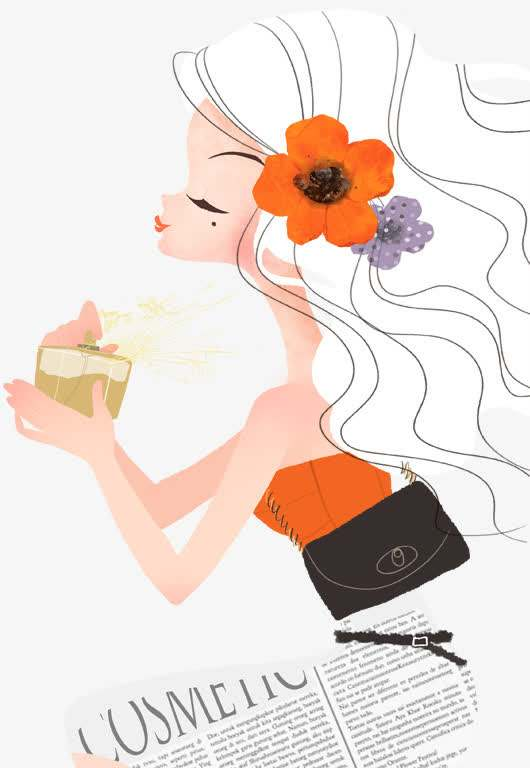
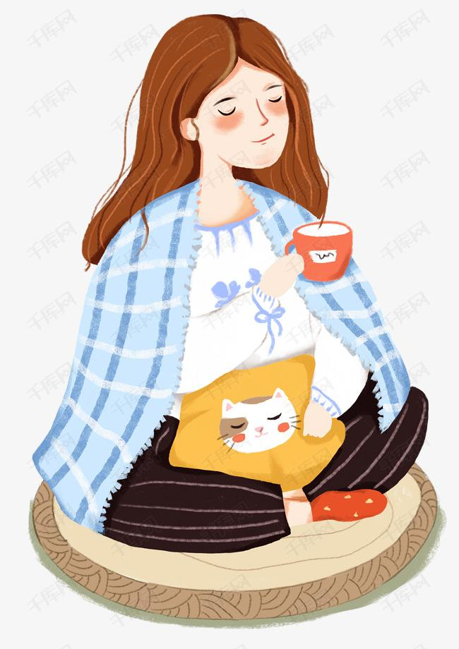

There are four ways to identify West Lake Longjing:
One touch: to determine the degree of dryness of the tea leaves. Pick a piece of dry tea at random,
put it between the thumb and forefinger and twist it hard to form a powder, the dryness is sufficient;
if it is a small particle, the dryness is insufficient, or the tea has absorbed moisture. Tea leaves with
insufficient dryness are more difficult to store, and their aroma is not high.
Second look: to see whether the dry tea meets the basic characteristics of Longjing tea, including shape,
color, uniformity, etc.
Three sniffs: sniff the level and type of aroma of dry tea, and identify whether there are bad smells
such as smoke, coke, sour, rancid, mildew and various mixed bad smells.
Distinguishing old and new tea leaves
The difference between Mingqian New Tea and Yuqian New Tea is mainly due to the picking time of the two.
Mingqian new tea is picked before Qingming, and Yuqian tea is picked before Guyu after Qingming. The amount of
tea in Mingqian is scarce, and the tea soup is more mellow. Although the tea soup of Yuqian tea is slightly bitter,
it is rich in nutrients.
"The fresher the tea, the better." This is a paradox. Because the phenols, aldehydes, and alcohols in fresh tea
have not been completely oxidized, drinking new tea for a long time will cause diarrhea and other uncomfortable
symptoms. If the tea has been stored for more than a year and a half or it has been moldy and deteriorated due to
improper storage, it should not be drunk.

Brewing method

1. West Lake Longjing brewing water temperature: 85-95 ℃ boiling water (do not use boiled water, before brewing,
it is best to cool the soup, that is, put it in the storage kettle for a while before brewing).
2. The amount of West Lake Longjing brewed tea: 3g/cup (or according to personal taste).
3. The choice of brewing water for West Lake Longjing: pure water or mountain spring water (Nongfu Spring is very
good, repeated boiling will reduce the oxygen content in the water and affect the taste of the tea soup).
4. Warm the cup with boiling water, pour out the water, and then put in the tea leaves. Then, pour one-fifth of
the boiling water, soak it, shake the fragrance for about 30 seconds, and then use the hanging pot high-infusion
method to pour 7/7 full of the boiling water. After 35 seconds, you can drink.